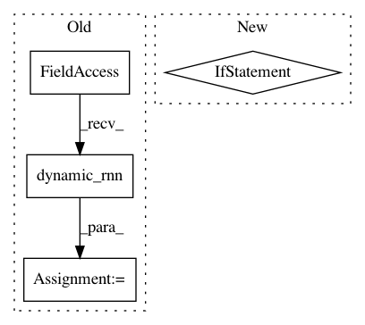

9000ad931722064fb2efe38649389a5154538ce4,tensorforce/core/layers/rnns.py,Gru,tf_apply,#Gru#Any#Any#,182
Before Change
self.variables[name] = variable
def tf_apply(self, x, sequence_length=None):
x, state = tf.nn.dynamic_rnn(
cell=self.cell, inputs=x, sequence_length=sequence_length, initial_state=None,
dtype=util.tf_dtype(dtype="float"),
// Weird TensorFlow behavior? (https://github.com/tensorflow/tensorflow/issues/15874)
parallel_iterations=(self.input_spec["shape"][0] + 1)
)
if self.return_final_state:
x = state
After Change
x = self.rnn(inputs=x, initial_state=None)
if self.return_final_state:
if self.cell == "gru":
x = x[1]
elif self.cell == "lstm":
x = tf.concat(values=(x[1], x[2]), axis=1)
else:
x = x[0]
return super().tf_apply(x=x)
In pattern: SUPERPATTERN
Frequency: 3
Non-data size: 4
Instances
Project Name: reinforceio/tensorforce
Commit Name: 9000ad931722064fb2efe38649389a5154538ce4
Time: 2019-02-13
Author: alexkuhnle@t-online.de
File Name: tensorforce/core/layers/rnns.py
Class Name: Gru
Method Name: tf_apply
Project Name: dpressel/mead-baseline
Commit Name: 17e198bcc50b15e0d521c71f25dd76f1cc840754
Time: 2019-09-25
Author: dpressel@gmail.com
File Name: python/eight_mile/tf/layers.py
Class Name: LSTMEncoderWithState
Method Name: call
Project Name: deepchem/deepchem
Commit Name: 2aa5cccc7c65d14305e60e0a61781aa11cb7142d
Time: 2019-03-28
Author: peastman@stanford.edu
File Name: deepchem/models/tensorgraph/layers.py
Class Name: LSTM
Method Name: create_tensor